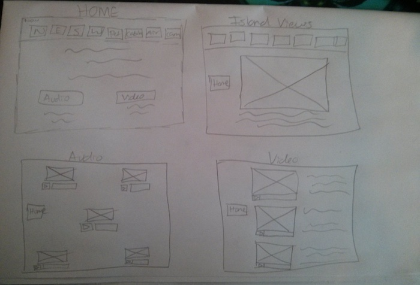
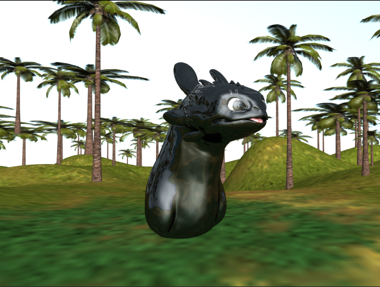

Here you can find the documentation of my time as a castaway on an isolated island.
Island Views
Planning and Resources
Planning
Flash Layout
This is the wireframe I made for a basis of the layout of the Flash scenario for the island views and audio and video I had chosen to take with me
When I was putting together the Flash scenario, the layout changed slightly, but that's always to be expected, it's just progress.
I really didn't have too much experience with Flash or ActionScript before this assignment so I spent a lot of time googling for how to do things, i.e. link buttons to previous pages, which was more complicated than expected, I found I had to link back to the first frame and then to whatever page the button really needed. This can be seen below
BackIcon.addEventListener(MouseEvent.CLICK, function(me:MouseEvent):void{
goToFrame(me, 1);
goToFrame(me, 50) //Added second stop to prevent bug where videos would only play after going to Frame 1
});
Not only did this fix prevent the videos from not playing after I'd already clicked on one, since I had to go back to the video page, then click on another. There was another issue where my Back button on the Cello information page didn't link to anywhere! Adding in this bit of code and making sure the button physically appeared on frame 1 and frame 30(where it intended to go) fixed the issue.
3D Modelling
The majority of planning was on the 3D Island itself. I had tried about 3 or 4 different island terrain scenarios before settling on the final, I kept wanting to put a volcanoe into it, but it seemed very unnecessary, given it wasn't listed in the brief. I spent the majority of my time in Mudbox and Zbrush creating the models to put on the terrain, the pet, trees, and cabin. The SOS rocks were made in Mudbox when the terrain was created.
The biggest issue was when I would transfer the dragon model from Zbrush to Maya via GOZ, the render would be very reflective(this also happened to an extent with my cabin model), there wasn't enough time to find out why this happened or render it in another application and transfer it, so I provided the render from Zbrush for the pet slide in the Flash scenario, that way the detail and proper material can be seen. Below is a test render of the dragon in Maya with mental ray(rendering a Zbrush model in Maya Software crashes my computer), the reflectiveness is very visible. The model also appeared to have 'cracked' when I created the displacement and texture maps in Zbrush to transfer it over.
This just proves that there's plenty of room for me to grow when it comes to 3D modelling.
Audio Editing
For the audio editing in Premiere Pro, I learned how to do a fade in/out using the keyframes on the audio clip itself so the clips wouldn't feel so choppy.
Resources
2D image of camera in island was taken from here which is an Ebay listing. Backup image incase Ebay deletes that page is on Imgur. Copyright information is unknown but assumed to belong to Canon. The image just fit perfectly with what I was looking for.
2D image of the cello was taken from Wiki, the copyright holder is Georg Feitscher.The audio for the clip was taken from Youtube.
{kind=link}
Textures used in Islands were obtained from CG Textures.
Homepage arrow taken from Universal Web Design.